overflow — 90.91% all categories ↑
PARTIAL 14.54% overflow-hidden-text-clip · hidden-clips-text · CONFOUNDED: font-metrics (`probe-text-baseline`)GeometryShiftΔE 77.0shift (-1.8,0.0)px
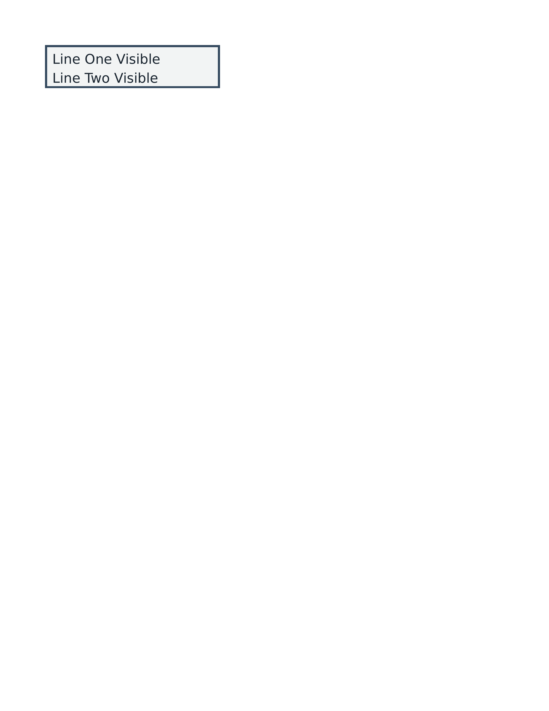
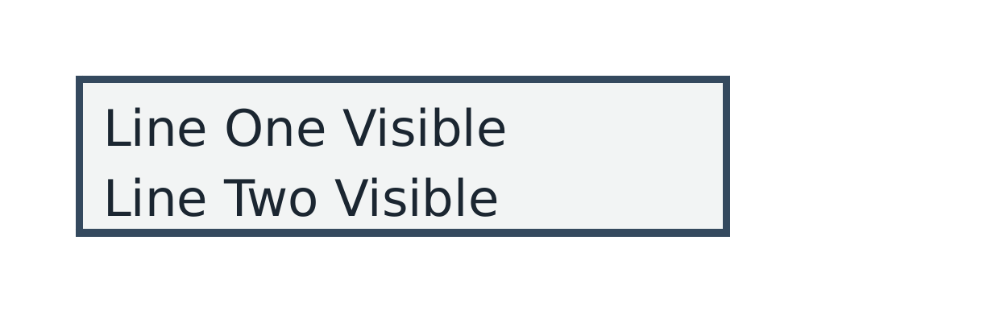
diff colours:MissingExtraColorErrGeomShiftAA edgeMatchAA / edge-jitter = cross-rasterizer measurement ceiling, not a bug.
why: via probe-text-baseline: content shifted (-1.8,0.0)px beyond page-origin calibration
overflow:hidden on a short fixed-height box clips overflowing text lines below the box edge (bundled ParitySans).
regions (6)
| class | bbox (CSS px) | area% | magnitude | reason |
|---|---|---|---|---|
| GeometryShift | 57,13 → 99,28 | 1.93 | ΔE 77.0 ΔRGB(-22,-21,-20) shift(-0.5,-0.1) | content shifted (-0.5,-0.1)px beyond page-origin calibration |
| GeometryShift | 64,43 → 95,56 | 1.54 | ΔE 77.0 ΔRGB(100,96,91) shift(-0.4,-0.1) | content shifted (-0.4,-0.1)px beyond page-origin calibration |
| GeometryShift | 26,17 → 51,28 | 1.03 | ΔE 77.0 ΔRGB(-24,-23,-22) shift(-0.5,-0.1) | content shifted (-0.5,-0.1)px beyond page-origin calibration |
| GeometryShift | 26,44 → 51,56 | 1.03 | ΔE 77.0 ΔRGB(-24,-23,-22) shift(-0.5,-0.1) | content shifted (-0.5,-0.1)px beyond page-origin calibration |
| GeometryShift | 139,12 → 154,28 | 0.95 | ΔE 77.0 ΔRGB(-71,-68,-65) shift(-0.5,-0.0) | content shifted (-0.5,-0.0)px beyond page-origin calibration |
| GeometryShift | 136,40 → 151,56 | 0.94 | ΔE 77.0 ΔRGB(-71,-68,-65) shift(-0.5,-0.0) | content shifted (-0.5,-0.0)px beyond page-origin calibration |
source · cases/overflow-clipping/overflow-hidden-text-clip.html
1<!DOCTYPE html>
2<html lang="en">
3<head>
4<meta charset="utf-8">
5<title>overflow hidden clips text</title>
6<style>
7 @page { size: 397px 125px; margin: 0; }
8 html { font-family: ParitySans; line-height: 1.5; }
9 * { margin: 0; box-sizing: border-box; }
10 html, body { background: #ffffff; }
11 .wrap { padding: 30px; }
12 /* overflow:hidden on a short, fixed-height box clips overflowing text
13 lines below the box edge. Bundled ParitySans for deterministic glyphs. */
14 .clip {
15 overflow: hidden;
16 width: 260px;
17 height: 64px;
18 background: #f2f4f4;
19 border: 3px solid #34495e;
20 font-family: ParitySans;
21 font-size: 20px;
22 line-height: 28px;
23 color: #1b2631;
24 padding: 4px 8px;
25 }
26</style>
27</head>
28<body>
29 <div class="wrap">
30 <div class="clip">Line One Visible<br>Line Two Visible<br>Line Three Hidden<br>Line Four Hidden</div>
31 </div>
32</body>
33</html>
PARTIAL 1.29% overflow-scroll-print-clip · scroll · REALExtra+0.3px Textra 1.2%ΔE 12.2shift (-0.3,-0.6)px
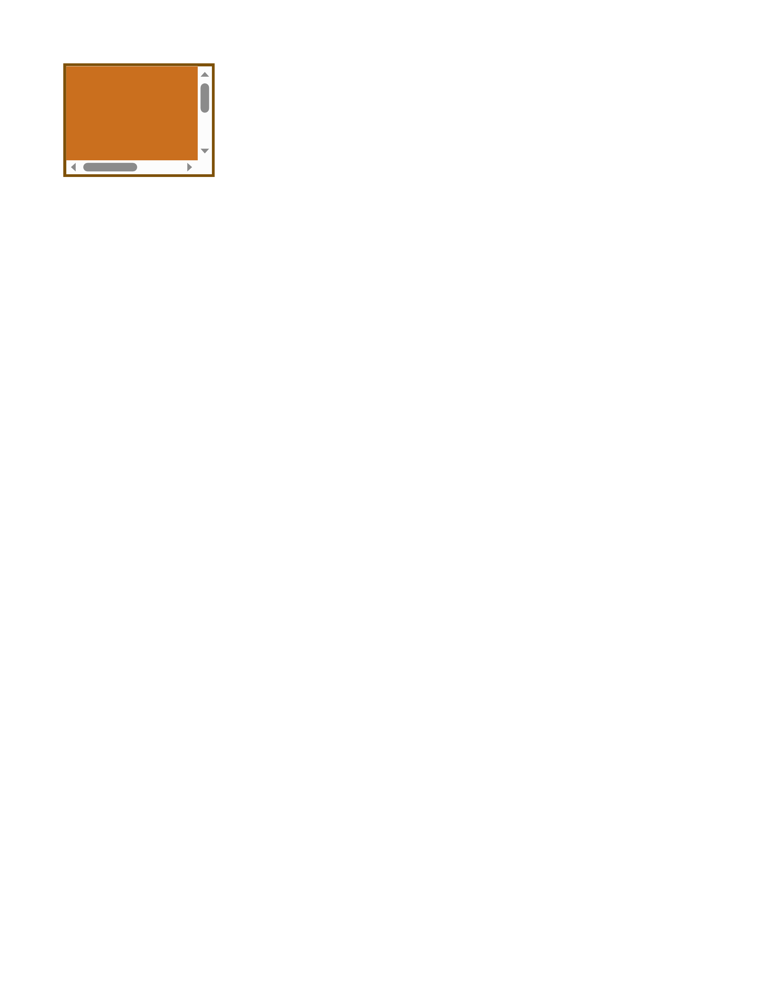
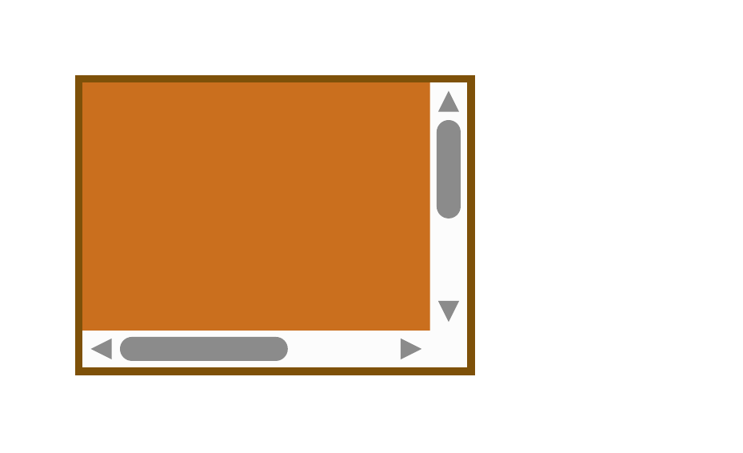
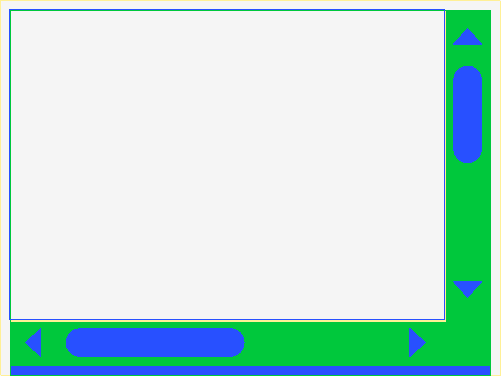
diff colours:MissingExtraColorErrGeomShiftAA edgeMatchAA / edge-jitter = cross-rasterizer measurement ceiling, not a bug.
why: extra paint where Chrome is blank (1.2%)
overflow:scroll produces no scrollbars in print; the oversized child is clipped to the box edges with no interactive scroll affordance.
regions (6)
| class | bbox (CSS px) | area% | magnitude | reason |
|---|---|---|---|---|
| Extra | 76,105 → 85,114 | 0.33 | extra paint where Chrome is blank (0.3%) | |
| Extra | 144,50 → 154,57 | 0.24 | extra paint where Chrome is blank (0.2%) | |
| Extra | 144,18 → 154,23 | 0.12 | extra paint where Chrome is blank (0.1%) | |
| Extra | 18,105 → 23,114 | 0.12 | extra paint where Chrome is blank (0.1%) | |
| GeometryShift | 25,105 → 73,105 | 0.08 | shift(0.0,-0.3) | content shifted (0.0,-0.3)px beyond page-origin calibration |
| Extra | 13,106 → 14,114 | 0.05 | extra paint where Chrome is blank (0.1%) |
source · cases/overflow-clipping/overflow-scroll-print-clip.html
1<!DOCTYPE html>
2<html lang="en">
3<head>
4<meta charset="utf-8">
5<title>overflow scroll in print</title>
6<style>
7 @page { size: 297px 181px; margin: 0; }
8 html { font-family: ParitySans; line-height: 1.5; }
9 * { margin: 0; box-sizing: border-box; }
10 html, body { background: #ffffff; }
11 .wrap { padding: 30px; }
12 /* overflow:scroll produces no scrollbars in print; the oversized child
13 is clipped to the box edges (no interactive scroll affordance). */
14 .clip {
15 overflow: scroll;
16 width: 160px;
17 height: 120px;
18 background: #fdf2e9;
19 border: 3px solid #7e5109;
20 }
21 .child {
22 width: 250px;
23 height: 200px;
24 background: #ca6f1e;
25 }
26</style>
27</head>
28<body>
29 <div class="wrap">
30 <div class="clip">
31 <div class="child"></div>
32 </div>
33 </div>
34</body>
35</html>
PASS 0.38% overflow-x-y-separate · overflow-x-overflow-yExtra+0.3px Textra 0.3%ΔE 9.8
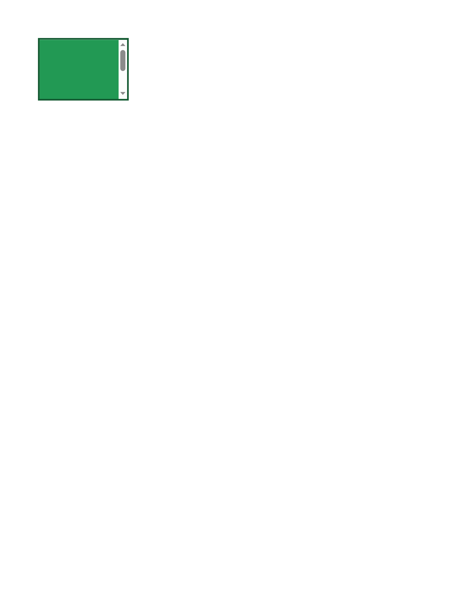
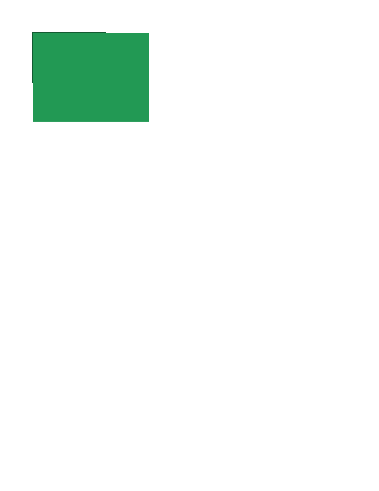
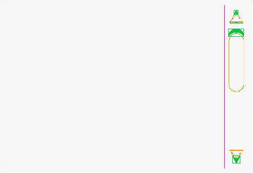
diff colours:MissingExtraColorErrGeomShiftAA edgeMatchAA / edge-jitter = cross-rasterizer measurement ceiling, not a bug.
why: extra paint where Chrome is blank (0.3%)
overflow-x:hidden clips horizontally while overflow-y:visible lets the child overflow downward only.
regions (6)
| class | bbox (CSS px) | area% | magnitude | reason |
|---|---|---|---|---|
| Extra | 144,18 → 154,23 | 0.13 | extra paint where Chrome is blank (0.1%) | |
| Extra | 147,99 → 152,104 | 0.05 | extra paint where Chrome is blank (0.1%) | |
| GeometryShift | 145,26 → 145,54 | 0.05 | shift(-0.3,0.0) | content shifted (-0.3,0.0)px beyond page-origin calibration |
| Extra | 145,14 → 153,15 | 0.03 | ΔRGB(-73,-73,-73) shift(1.7,4.4) | extra paint where Chrome is blank (0.0%) |
| Extra | 148,6 → 150,9 | 0.02 | extra paint where Chrome is blank (0.0%) | |
| GeometryShift | 145,95 → 153,96 | 0.02 | ΔRGB(-18,-18,-18) shift(0.0,0.3) | content shifted (0.0,0.3)px beyond page-origin calibration |
source · cases/overflow-clipping/overflow-x-y-separate.html
1<!DOCTYPE html>
2<html lang="en">
3<head>
4<meta charset="utf-8">
5<title>overflow-x and overflow-y separate</title>
6<style>
7 @page { size: 297px 171px; margin: 0; }
8 html { font-family: ParitySans; line-height: 1.5; }
9 * { margin: 0; box-sizing: border-box; }
10 html, body { background: #ffffff; }
11 .wrap { padding: 30px; }
12 /* overflow-x:hidden clips horizontally while overflow-y:visible lets the
13 child overflow downward only. Child extends past both axes. */
14 .clip {
15 overflow-x: hidden;
16 overflow-y: visible;
17 width: 160px;
18 height: 110px;
19 background: #eafaf1;
20 border: 3px solid #145a32;
21 }
22 .child {
23 width: 250px;
24 height: 190px;
25 background: #229954;
26 }
27</style>
28</head>
29<body>
30 <div class="wrap">
31 <div class="clip">
32 <div class="child"></div>
33 </div>
34 </div>
35</body>
36</html>
PASS 0.13% overflow-hidden-nested · nested-clip-intersectionColorValueΔE 7.0
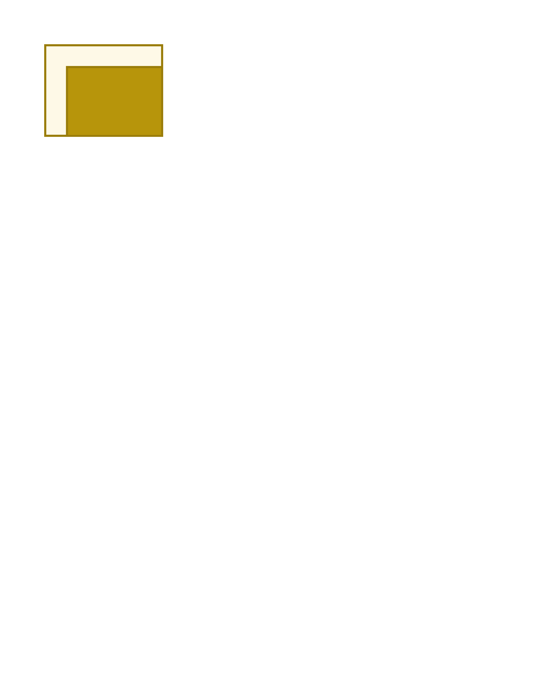
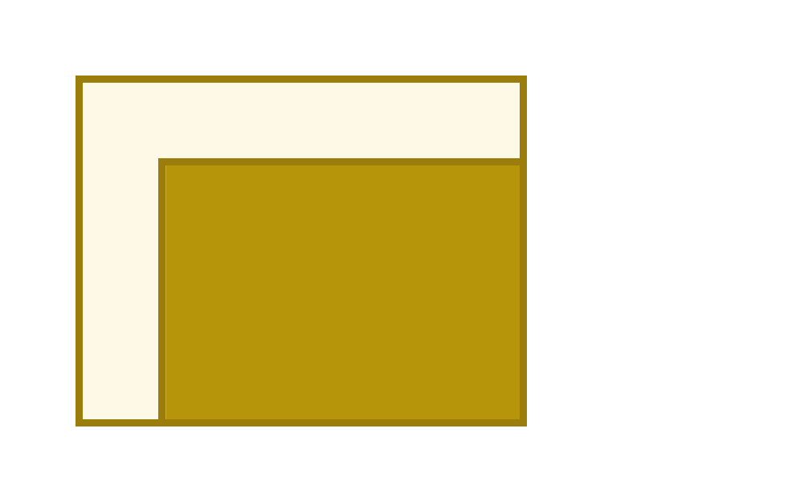
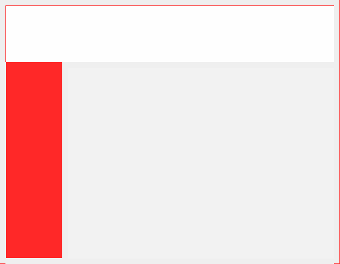
diff colours:MissingExtraColorErrGeomShiftAA edgeMatchAA / edge-jitter = cross-rasterizer measurement ceiling, not a bug.
why: fill recolour ΔRGB(+22,+24,+34) (ΔE 7.0)
Nested overflow:hidden boxes; the visible region is the intersection of the outer and inner clip rectangles, with the grandchild clipped by both.
regions (1)
| class | bbox (CSS px) | area% | magnitude | reason |
|---|---|---|---|---|
| ColorValue | 36,36 → 36,137 | 0.13 | ΔRGB(22,24,34) | fill recolour ΔRGB(+22,+24,+34) (ΔE 0.0) |
source · cases/overflow-clipping/overflow-hidden-nested.html
1<!DOCTYPE html>
2<html lang="en">
3<head>
4<meta charset="utf-8">
5<title>nested overflow hidden</title>
6<style>
7 @page { size: 317px 200px; margin: 0; }
8 html { font-family: ParitySans; line-height: 1.5; }
9 * { margin: 0; box-sizing: border-box; }
10 html, body { background: #ffffff; }
11 .wrap { padding: 30px; }
12 /* Nested overflow:hidden. The inner clip box overflows the outer clip
13 box on the right/bottom and is itself clipped by the outer box, while
14 the inner box clips its own oversized grandchild. Effective visible
15 region is the intersection of the two clip rectangles. */
16 .outer {
17 overflow: hidden;
18 width: 180px;
19 height: 140px;
20 background: #fef9e7;
21 border: 3px solid #9a7d0a;
22 }
23 .inner {
24 overflow: hidden;
25 margin: 30px 0 0 30px;
26 width: 200px;
27 height: 160px;
28 background: #f7dc6f;
29 border: 3px solid #9a7d0a;
30 }
31 .grandchild {
32 width: 300px;
33 height: 260px;
34 background: #b7950b;
35 }
36</style>
37</head>
38<body>
39 <div class="wrap">
40 <div class="outer">
41 <div class="inner">
42 <div class="grandchild"></div>
43 </div>
44 </div>
45 </div>
46</body>
47</html>
PASS 0.05% overflow-hidden-border-radius · hidden-with-border-radiusColorValue−0.3px RΔE 5.1
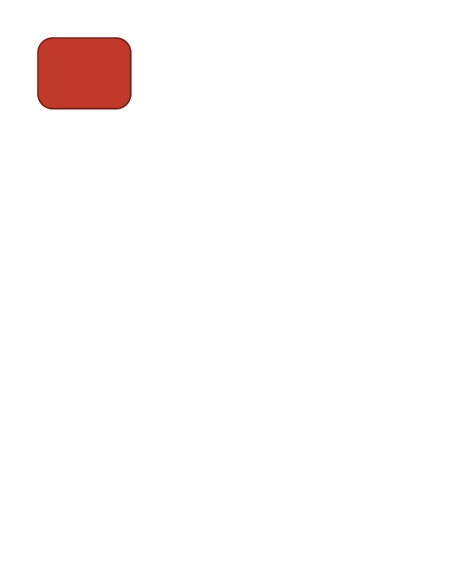
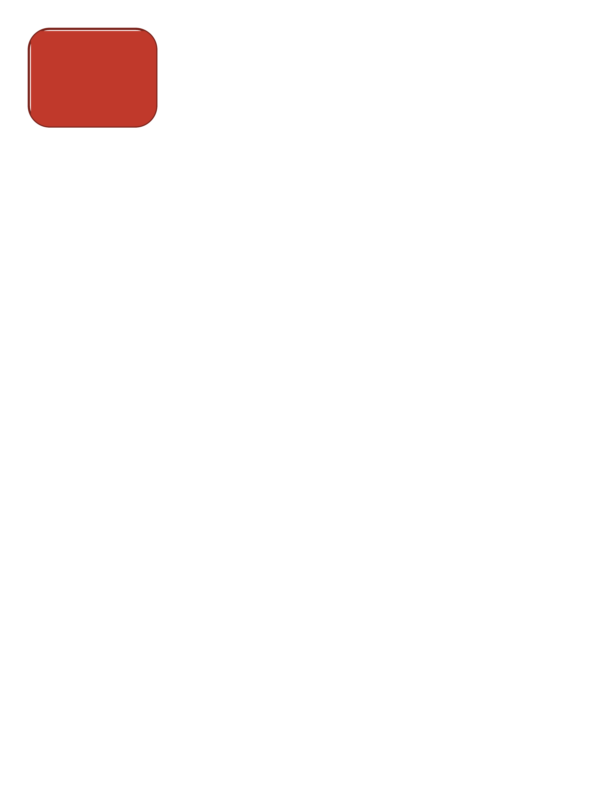
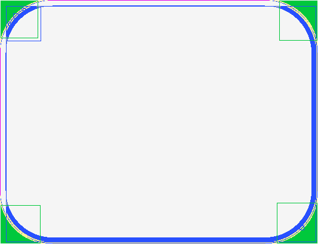
diff colours:MissingExtraColorErrGeomShiftAA edgeMatchAA / edge-jitter = cross-rasterizer measurement ceiling, not a bug.
why: fill recolour ΔRGB(-9,-18,-19) (ΔE 5.1)
overflow:hidden combined with border-radius clips the overflowing child to the rounded corners of the clip box.
source · cases/overflow-clipping/overflow-hidden-border-radius.html
1<!DOCTYPE html>
2<html lang="en">
3<head>
4<meta charset="utf-8">
5<title>overflow hidden with border-radius</title>
6<style>
7 @page { size: 307px 191px; margin: 0; }
8 html { font-family: ParitySans; line-height: 1.5; }
9 * { margin: 0; box-sizing: border-box; }
10 html, body { background: #ffffff; }
11 .wrap { padding: 30px; }
12 /* overflow:hidden combined with border-radius clips the overflowing
13 child to the rounded corners of the clip box. */
14 .clip {
15 overflow: hidden;
16 border-radius: 28px;
17 width: 170px;
18 height: 130px;
19 background: #fdedec;
20 border: 3px solid #7b241c;
21 }
22 .child {
23 width: 260px;
24 height: 210px;
25 background: #c0392b;
26 }
27</style>
28</head>
29<body>
30 <div class="wrap">
31 <div class="clip">
32 <div class="child"></div>
33 </div>
34 </div>
35</body>
36</html>
PASS 0.00% overflow-clip · clipAaOnly
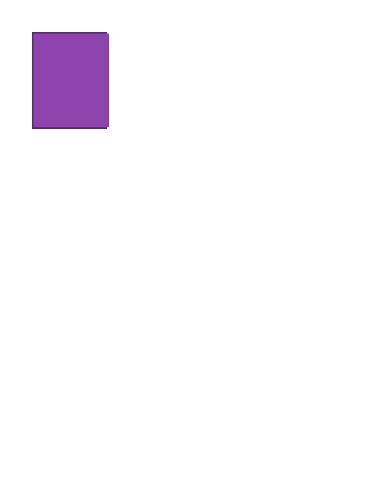

diff colours:MissingExtraColorErrGeomShiftAA edgeMatchAA / edge-jitter = cross-rasterizer measurement ceiling, not a bug.
why: differences confined to glyph AA edges — measurement ceiling, not a bug
overflow:clip clips the oversized child to the clip box with no scroll container (modern clip keyword).
source · cases/overflow-clipping/overflow-clip.html
1<!DOCTYPE html>
2<html lang="en">
3<head>
4<meta charset="utf-8">
5<title>overflow clip</title>
6<style>
7 @page { size: 297px 181px; margin: 0; }
8 html { font-family: ParitySans; line-height: 1.5; }
9 * { margin: 0; box-sizing: border-box; }
10 html, body { background: #ffffff; }
11 .wrap { padding: 30px; }
12 /* overflow:clip clips the oversized child to the clip box with no
13 scroll container (similar visual result to overflow:hidden). */
14 .clip {
15 overflow: clip;
16 width: 160px;
17 height: 120px;
18 background: #f4ecf7;
19 border: 3px solid #512e5f;
20 }
21 .child {
22 width: 250px;
23 height: 200px;
24 background: #8e44ad;
25 }
26</style>
27</head>
28<body>
29 <div class="wrap">
30 <div class="clip">
31 <div class="child"></div>
32 </div>
33 </div>
34</body>
35</html>
PASS 0.00% overflow-hidden-clip · hiddenAaOnly
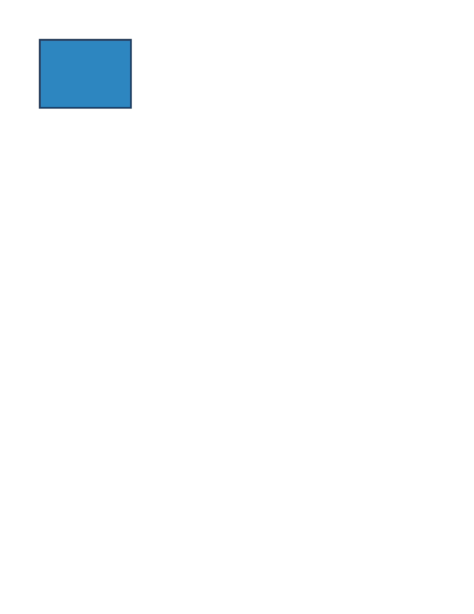
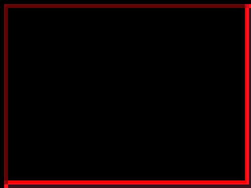
diff colours:MissingExtraColorErrGeomShiftAA edgeMatchAA / edge-jitter = cross-rasterizer measurement ceiling, not a bug.
why: differences confined to glyph AA edges — measurement ceiling, not a bug
overflow:hidden clips an oversized in-flow child to the clip box; the child is cut off at the right and bottom edges.
source · cases/overflow-clipping/overflow-hidden-clip.html
1<!DOCTYPE html>
2<html lang="en">
3<head>
4<meta charset="utf-8">
5<title>overflow hidden clip</title>
6<style>
7 @page { size: 297px 181px; margin: 0; }
8 html { font-family: ParitySans; line-height: 1.5; }
9 * { margin: 0; box-sizing: border-box; }
10 html, body { background: #ffffff; }
11 .wrap { padding: 30px; }
12 /* overflow:hidden clips an oversized in-flow child to the clip box.
13 The child extends 90px past the right edge and 80px past the bottom. */
14 .clip {
15 overflow: hidden;
16 width: 160px;
17 height: 120px;
18 background: #eaf2f8;
19 border: 3px solid #1f3a5f;
20 }
21 .child {
22 width: 250px;
23 height: 200px;
24 background: #2e86c1;
25 }
26</style>
27</head>
28<body>
29 <div class="wrap">
30 <div class="clip">
31 <div class="child"></div>
32 </div>
33 </div>
34</body>
35</html>
PASS 0.00% overflow-hidden-flex-item · hidden-on-flex-itemAaOnly+0.3px T
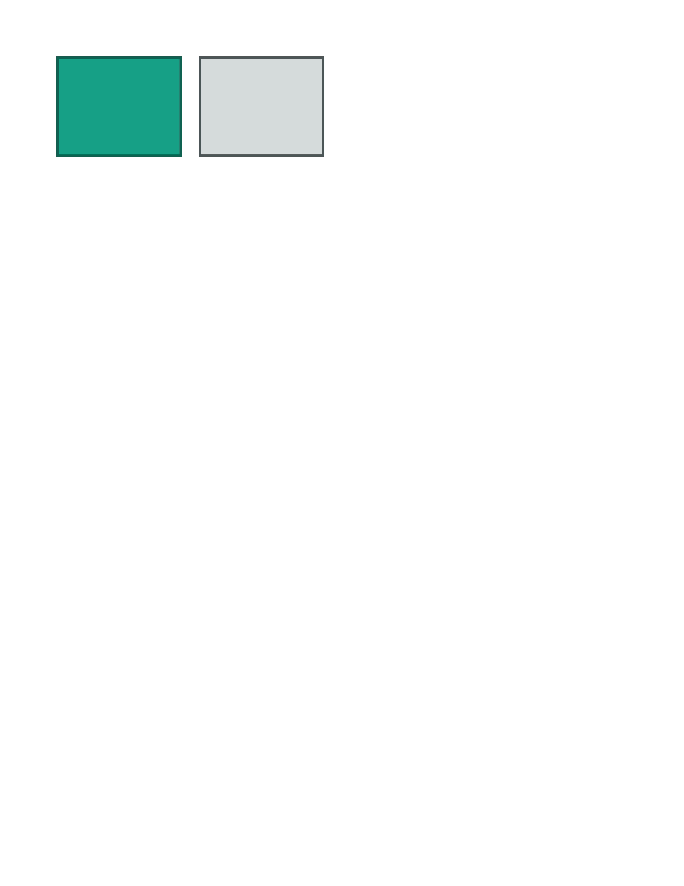
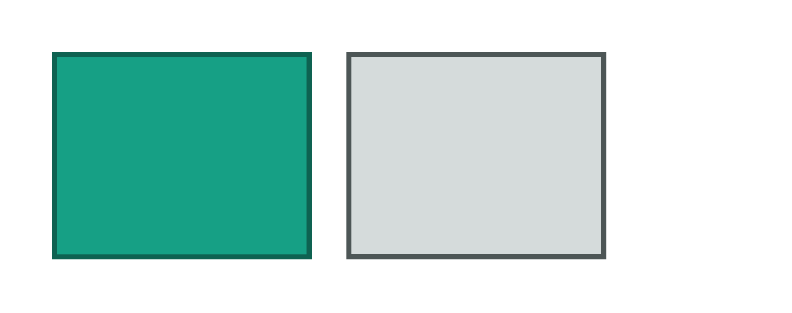
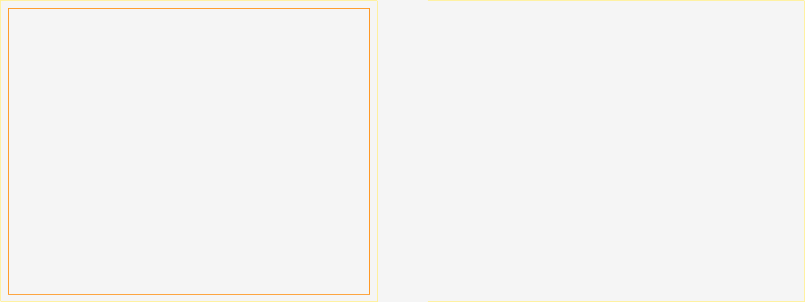
diff colours:MissingExtraColorErrGeomShiftAA edgeMatchAA / edge-jitter = cross-rasterizer measurement ceiling, not a bug.
why: differences confined to glyph AA edges — measurement ceiling, not a bug
A flex item with overflow:hidden clips its oversized inner block to the flex item box while the sibling item is unaffected.
source · cases/overflow-clipping/overflow-hidden-flex-item.html
1<!DOCTYPE html>
2<html lang="en">
3<head>
4<meta charset="utf-8">
5<title>overflow hidden on flex item</title>
6<style>
7 @page { size: 457px 181px; margin: 0; }
8 html { font-family: ParitySans; line-height: 1.5; }
9 * { margin: 0; box-sizing: border-box; }
10 html, body { background: #ffffff; }
11 .wrap { padding: 30px; }
12 /* A flex container holds two items; the first flex item has
13 overflow:hidden and clips its oversized inner block. */
14 .row {
15 display: flex;
16 gap: 20px;
17 width: 360px;
18 }
19 .item {
20 overflow: hidden;
21 width: 150px;
22 height: 120px;
23 background: #e8f6f3;
24 border: 3px solid #0e6251;
25 }
26 .item .inner {
27 width: 240px;
28 height: 200px;
29 background: #16a085;
30 }
31 .plain {
32 width: 150px;
33 height: 120px;
34 background: #d5dbdb;
35 border: 3px solid #4d5656;
36 }
37</style>
38</head>
39<body>
40 <div class="wrap">
41 <div class="row">
42 <div class="item"><div class="inner"></div></div>
43 <div class="plain"></div>
44 </div>
45 </div>
46</body>
47</html>
PASS 0.00% overflow-hidden-grid-item · hidden-on-grid-itemAaOnly
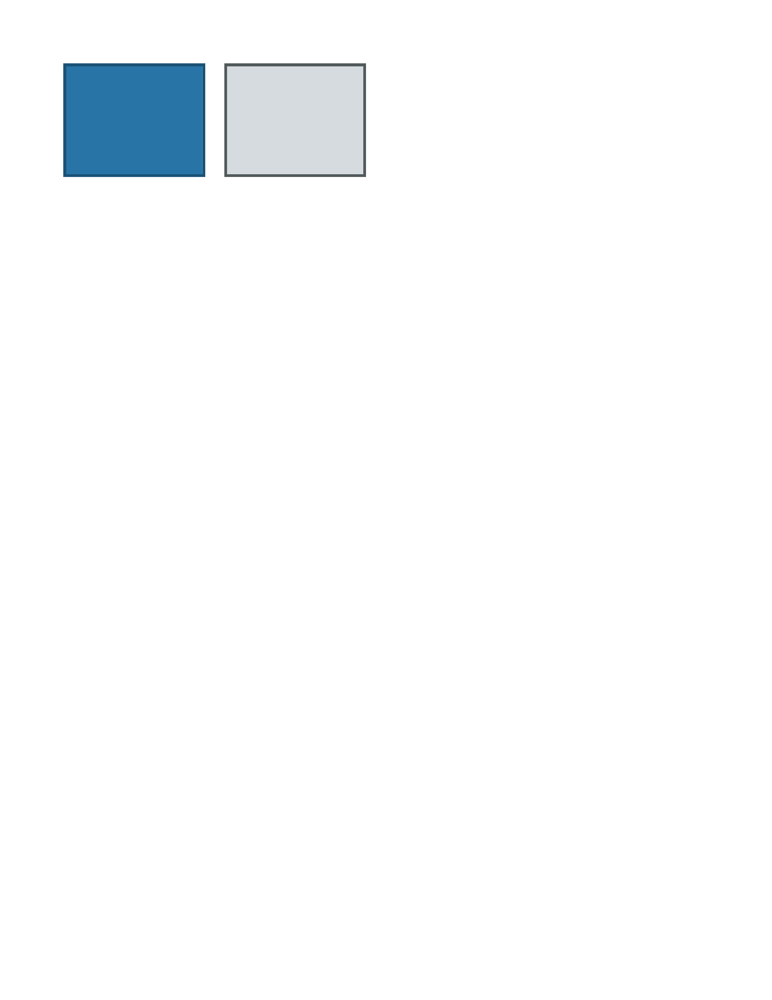
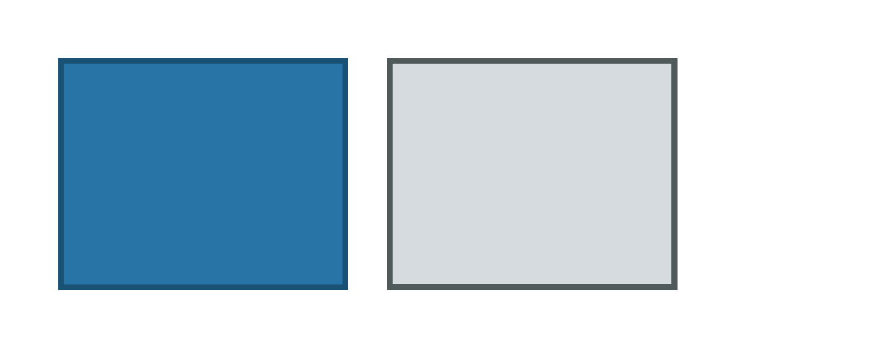
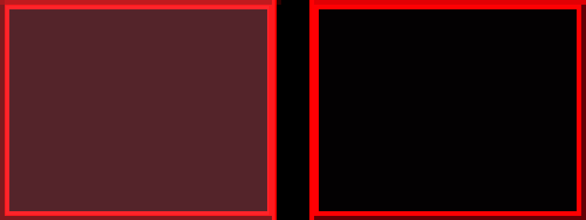
diff colours:MissingExtraColorErrGeomShiftAA edgeMatchAA / edge-jitter = cross-rasterizer measurement ceiling, not a bug.
why: differences confined to glyph AA edges — measurement ceiling, not a bug
A grid cell with overflow:hidden clips its oversized inner block to the cell box while the sibling cell is unaffected.
source · cases/overflow-clipping/overflow-hidden-grid-item.html
1<!DOCTYPE html>
2<html lang="en">
3<head>
4<meta charset="utf-8">
5<title>overflow hidden on grid item</title>
6<style>
7 @page { size: 457px 181px; margin: 0; }
8 html { font-family: ParitySans; line-height: 1.5; }
9 * { margin: 0; box-sizing: border-box; }
10 html, body { background: #ffffff; }
11 .wrap { padding: 30px; }
12 /* A two-column grid; the first grid cell has overflow:hidden and
13 clips its oversized inner block to the cell box. */
14 .grid {
15 display: grid;
16 grid-template-columns: 150px 150px;
17 gap: 20px;
18 width: 320px;
19 }
20 .cell {
21 overflow: hidden;
22 height: 120px;
23 background: #ebf5fb;
24 border: 3px solid #1a5276;
25 }
26 .cell .inner {
27 width: 240px;
28 height: 200px;
29 background: #2874a6;
30 }
31 .plain {
32 height: 120px;
33 background: #d6dbdf;
34 border: 3px solid #515a5a;
35 }
36</style>
37</head>
38<body>
39 <div class="wrap">
40 <div class="grid">
41 <div class="cell"><div class="inner"></div></div>
42 <div class="plain"></div>
43 </div>
44 </div>
45</body>
46</html>
PASS 0.00% overflow-padding-box-clip · padding-box-clip-edgeAaOnly
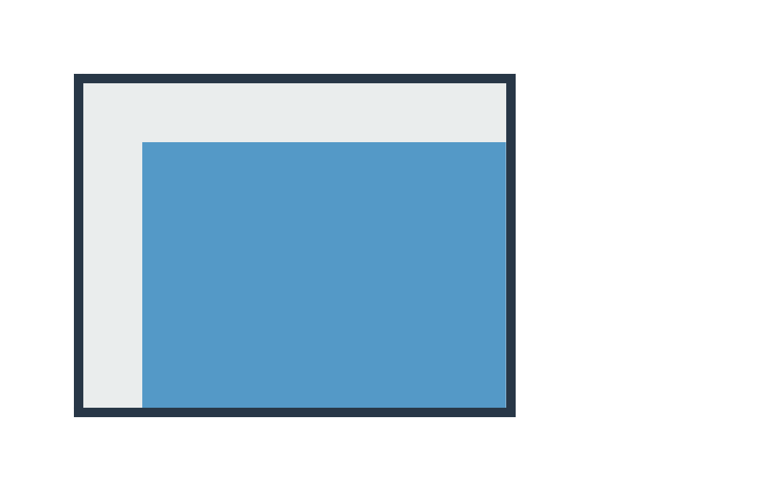
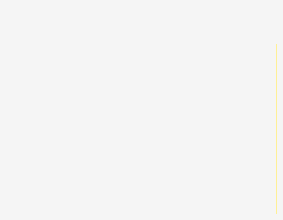
diff colours:MissingExtraColorErrGeomShiftAA edgeMatchAA / edge-jitter = cross-rasterizer measurement ceiling, not a bug.
why: differences confined to glyph AA edges — measurement ceiling, not a bug
overflow:hidden on a padded box clips its oversized child at the PADDING box: the child fills the padding box out to the inner border edge and is cut there, leaving the border fully visible and the top/left padding band showing.
source · cases/overflow-clipping/overflow-padding-box-clip.html
1<!DOCTYPE html>
2<html lang="en">
3<head>
4<meta charset="utf-8">
5<title>overflow clip at padding box</title>
6<style>
7 @page { size: 317px 200px; margin: 0; }
8 html { font-family: ParitySans; line-height: 1.5; }
9 * { margin: 0; box-sizing: border-box; }
10 html, body { background: #ffffff; }
11 .wrap { padding: 30px; }
12 /* A padded clipper with an oversized child. The clip edge must be the
13 PADDING box: the child fills the whole padding box (under the padding,
14 out to the inner border edge) and is cut there, so the border stays fully
15 visible on all four sides. This isolates the padding-box-vs-border-box and
16 padding-box-vs-content-box clip behaviour. */
17 .clip {
18 overflow: hidden;
19 width: 180px;
20 height: 140px;
21 padding: 24px;
22 background: #eaeded;
23 border: 4px solid #283747;
24 }
25 .child {
26 width: 300px;
27 height: 240px;
28 background: #5499c7;
29 }
30</style>
31</head>
32<body>
33 <div class="wrap">
34 <div class="clip">
35 <div class="child"></div>
36 </div>
37 </div>
38</body>
39</html>
PASS 0.00% overflow-visible-no-clip · visibleAaOnly
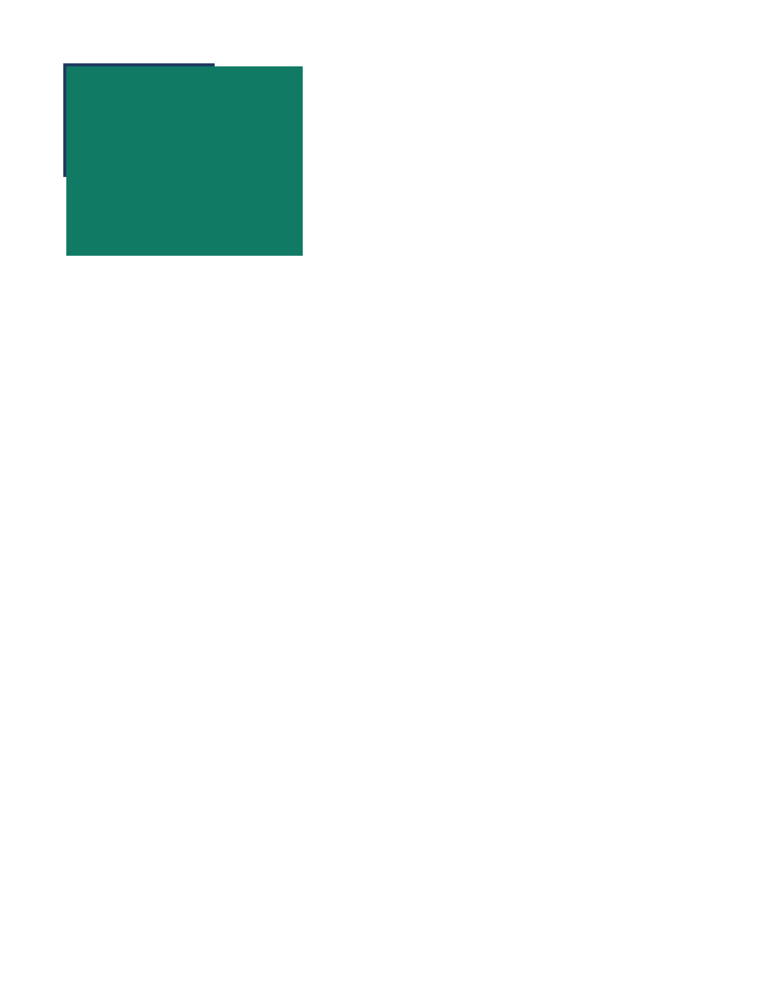
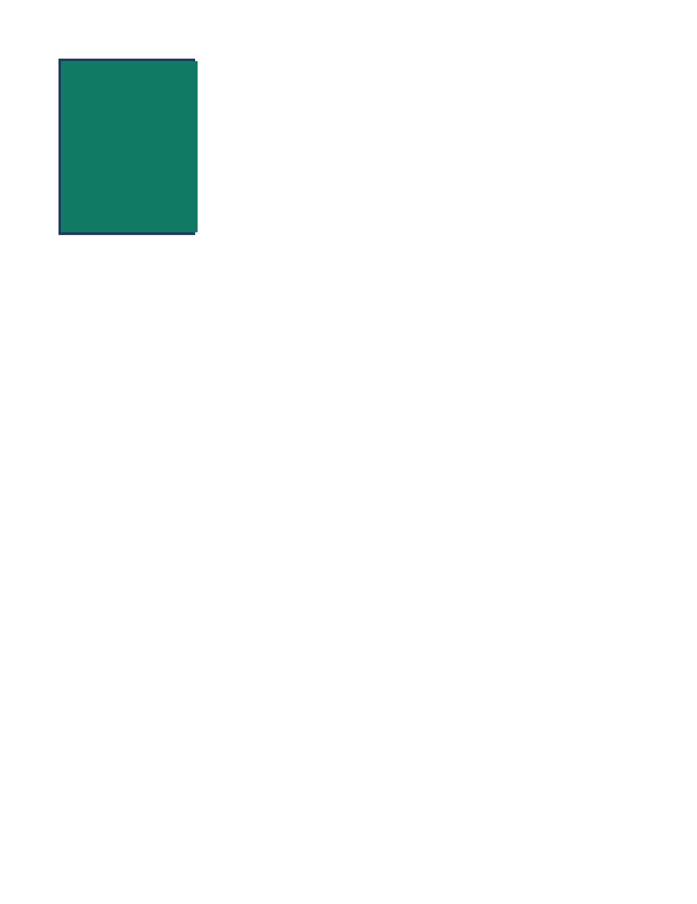
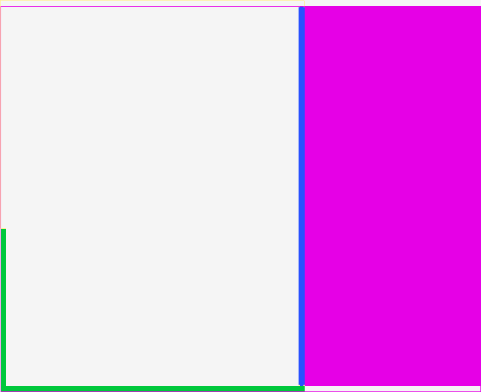
diff colours:MissingExtraColorErrGeomShiftAA edgeMatchAA / edge-jitter = cross-rasterizer measurement ceiling, not a bug.
why: differences confined to glyph AA edges — measurement ceiling, not a bug
overflow:visible (explicit) does not clip; the oversized child paints beyond the parent box on the right and bottom.
source · cases/overflow-clipping/overflow-visible-no-clip.html
1<!DOCTYPE html>
2<html lang="en">
3<head>
4<meta charset="utf-8">
5<title>overflow visible no clip</title>
6<style>
7 @page { size: 390px 264px; margin: 0; }
8 html { font-family: ParitySans; line-height: 1.5; }
9 * { margin: 0; box-sizing: border-box; }
10 html, body { background: #ffffff; }
11 .wrap { padding: 30px; }
12 /* overflow:visible (explicit) does not clip; the oversized child paints
13 beyond the parent box on the right and bottom. */
14 .clip {
15 overflow: visible;
16 width: 160px;
17 height: 120px;
18 background: #eaf2f8;
19 border: 3px solid #1f3a5f;
20 }
21 .child {
22 width: 250px;
23 height: 200px;
24 background: #117a65;
25 }
26</style>
27</head>
28<body>
29 <div class="wrap">
30 <div class="clip">
31 <div class="child"></div>
32 </div>
33 </div>
34</body>
35</html>